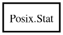

Posix.Stat – posix Reference Manual
Stat
Object Hierarchy:

Description:
[
CCode
( cname =
"struct stat"
, has_type_id =
false
) ]
public
struct
Stat
Namespace:
Posix
Package:
posix
Content:
Fields:
public
dev_t
st_dev
public
ino_t
st_ino
public
mode_t
st_mode
public
nlink_t
st_nlink
public
uid_t
st_uid
public
gid_t
st_gid
public
dev_t
st_rdev
public
size_t
st_size
public
timespec
st_atim
public
time_t
st_atime
public
timespec
st_mtim
public
time_t
st_mtime
public
timespec
st_ctim
public
time_t
st_ctime
public
blksize_t
st_blksize
public
blkcnt_t
st_blocks